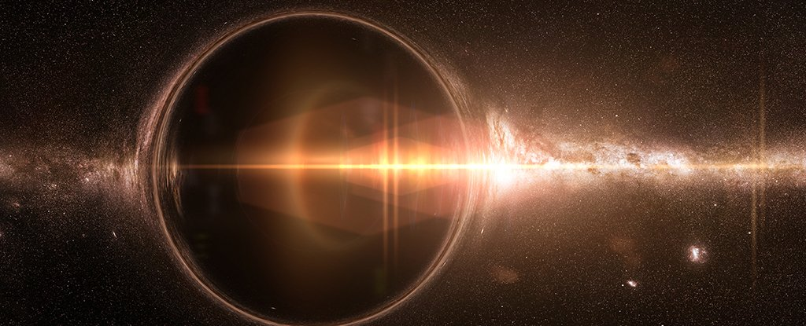
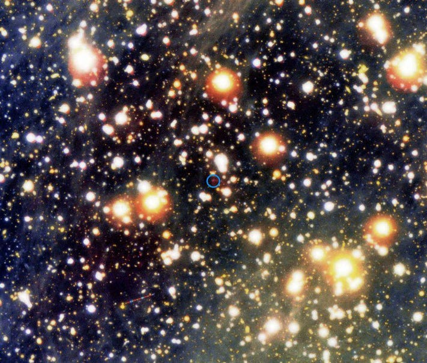

Black Holes and Hawking Radiation - The Basics
We all know that black holes take in matter, or actually, space. But, did you know that black holes can evaporate themselves? If you are asking how that is possible if black holes even take in the fastest travelling particles like photons, let me tell you why.
In 1974, Stephen Hawking discovered that even black holes radiate, meaning that black holes… aren’t black. Now, if they take in light, how do they radiate? If they take in space itself, how do they emit anything that can distinguish themselves? Before we get into this, let us understand the meaning of virtual particles.
A black hole
A black hole is a point in space, that is so dense that it has immense gravity, sucking everything in itself, even light. To put this into perspective, the density is so high that a black hole the size of a coin will have the same mass as the Earth. Everything within the event horizon (a line determined according to the Schwarzschild Radius) has no chance of escaping this gravitational power-house, but outside this event horizon, all matter and space has a chance of escaping. Think of an event horizon as the corner of a ridge, after which there is a waterfall. After this corner, everything that is flowing in the water, and the water itself, falls down. In a black hole, after the event horizon, everything in space, along with space itself, falls inside the black hole. So, when the black hole takes takens in more mass, its own mass increases (because of the law of the conservation of mass and energy). As the mass increases, so does the Schwarzschild radius, and with that, the event horizon.
Virtual Particles
As stated in Heisenberg’s Uncertainty Principle, space is never empty.  There are particles in space (fluctuations, in reality, but it is easier to think of them as particles) popping into existence and annihilating each other everywhere, at every moment. These particles are called virtual particles, and they are at the base of the concept of Hawking Radiation.
Hawking Radiation
When the virtual particles are created at the event horizon, the negative antiparticle has a chance of being sucked inside, while the positive one has a chance to escape. When a negative antiparticle is sucked inside, the positive particle can move, and even take some of the energy of the black hole to become a real particle. To a distant observer, it looks like the black hole released a particle and lost mass, and therefore, it radiated. This is because when energy is lost, mass is too (as according to the infamous equation, e = mc2, energy and mass are proportional), and it shrinks, although at a very minuscule rate. But there is one more aspect to this theory. This aspect is that when an object’s energy is lost, its temperature increases, and when its temperature increases, it radiates even more. So, as energy is lost, temperature increases, and the rate at which the black hole is radiating increases. Hence, as the mass decreases, the radiation increases, and because of this loop, the smaller the black hole, the faster it evaporates.
But of course, since black holes also consume a huge amount of matter and mass, it will take hundreds of millennia for black holes to evaporate. Yet, one day, they will, and it will be difficult for you and I to witness this spectacular phenomenon.
Image Credits: NASA, Forbes
References
- "The Phenomenon of Black Holes." PapersOwl.com, 4 Oct 2019, https://papersowl.com/examples/the-phenomenon-of-black-holes/.
- “Breakthrough Junior Challenge 2019 - Hawking radiation.” Youtube, uploaded by Hasith Vattikuti, 16 June 2019, https://www.youtube.com/watch?v=488Z-IBPQNw.
- “Hawking Radiation.” Youtube, uploaded by PBS Space Time, 16 March 2018, https://www.youtube.com/watch?v=qPKj0YnKANw.
- “Hawking radiation.” Youtube, uploaded by ScienceClic English, 20 April 2021, https://www.youtube.com/watch?v=isezfMo8kWQ.
- Seigel, Ethan, host. “Hawking’s Greatest Discovery.” Starts With A Bang, episode 30, 29 March 2018, https://bigthink.com/starts-with-a-bang/new-podcast-hawkings-greatest-discovery/.